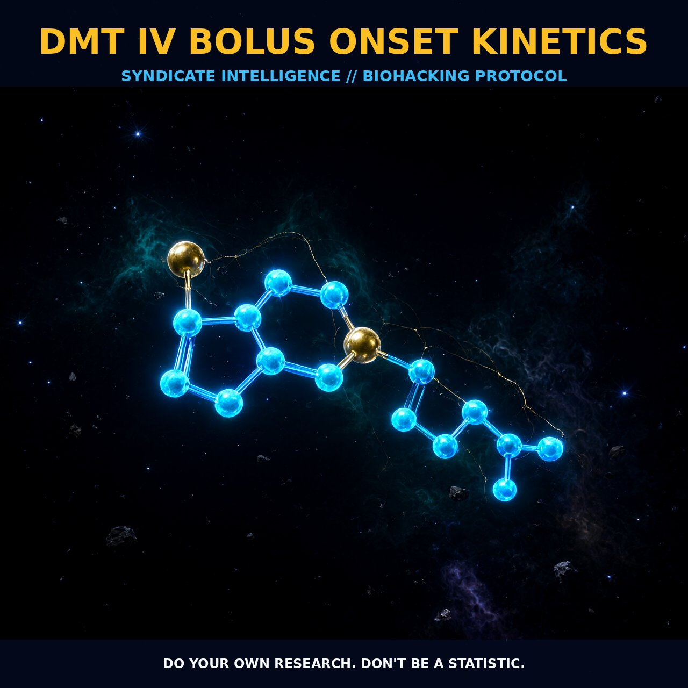

IV DMT Onset Kinetics: Optimizing Plasma Peaks and

1. The Pharmacokinetic Architecture of IV DMT
The administration of N,N-Dimethyltryptamine (DMT) via intravenous bolus establishes a unique pharmacokinetic profile, characterized by an immediate surge into systemic circulation that achieves peak plasma concentrations within two minutes. This rapid onset is distinct from pulmonary or oral routes, creating a sharp initial spike in bioavailability. In continuous infusion protocols, this primary surge is followed by a secondary concentration peak around the twenty-nine-minute mark, driven by sustained delivery rates that maintain levels significantly above baseline for approximately thirty minutes.
Crucially, data reveals a decoupling phenomenon after the twenty-minute mark: while plasma concentrations continue to rise or stabilize, subjective intensity plateaus. This indicates the development of acute psychological tolerance during infusion, where the central nervous system’s perception of salience diminishes even as the drug remains abundant in the blood. This dissociation between physiological presence and perceptual weight provides a critical window for protocol refinement, allowing clinicians and voyagers to adjust bolus loading and infusion velocities to match desired phenomenological states precisely.
2. Dose-Dependent Dynamics and Clearance
DMT plasma levels exhibit a robust dose-dependent relationship throughout the therapeutic window. Mean concentrations remain statistically significant for all measured timepoints until the fifty-minute mark, after which an exponential decline begins upon termination of the infusion. The clearance mechanism is highly efficient; within ninety minutes post-infusion, DMT drops to less than one nanomolar, highlighting its limited persistence relative to its potent onset.
This rapid metabolism supports the use of continuous IV infusions to extend transient effects into a stable, moderate-to-high intensity state. By avoiding the sharp peaks that overwhelm the autonomic system, IV administration allows for controlled immersion. The stability of heart rate following the initial spike confirms that extended durations do not impose excessive physiological stress, ensuring that the biological load remains manageable and predictable for deep psychological engagement.
3. Neurochemical Mechanisms and Safety
The pharmacological activity of DMT is primarily mediated through serotonin receptor interaction, with monoamine oxidase A (MAO-A) serving as the key metabolic limiter. When protected from first-pass hepatic degradation via parenteral routes, DMT rapidly penetrates the central compartment to modulate signaling pathways governing consciousness and sensory processing.
A critical safety marker is the habituation of autonomic effects while subjective ratings remain elevated. The stabilization of heart rate despite continued exposure suggests that the body adapts to sympathetic stimulation early in the process. This separation between physical strain and mental intensity implies that short-term tolerance develops through receptor occupancy adaptation, allowing for extended durations without compounding anxiety. This biological adaptability makes IV infusion a viable technology for fine-tuning the DMT experience, offering a controlled environment for bipartite communication with internal perceptual shifts.
4. Tactical Implementation Protocols
For clinical precision at home or in specialized settings, a starting regimen of a six-milligram bolus followed by a constant rate infusion of approximately 0.63 milligrams per minute is recommended. This protocol induces peak subjective intensity below the seven-point mark on a ten-point scale, balancing potency with psychological safety.
Implementation should account for temporal dynamics. A slower onset may be favored for acclimatization, reducing the sharp transition typical of rapid boluses. Monitoring physiological markers such as heart rate provides real-time feedback on autonomic load. The goal is to identify the specific combination of bolus magnitude and infusion velocity that maintains plasma concentrations within the therapeutic window long enough to permit deep immersion, concluding with a controlled taper that mirrors the natural exponential decline of the compound.
5. Prostar Life Hack
Master the 'Decoupling Window.' If you feel your DMT experience is peaking too early or becoming overwhelming, do not terminate the infusion immediately. Observe the period between minutes twenty and thirty. If your heart rate has normalized but your subjective intensity remains high, continue the infusion at a steady rate. This allows acute tolerance to settle while plasma levels remain therapeutic, extending the 'peak' phase into a stable plateau without increasing physical strain. Adjust termination around minute twenty-six to capture this optimized peak before the gradual decline begins.
Prostar Life Hack
Master the 'Decoupling Window.' If you feel your DMT experience is peaking too early or becoming overwhelming, do not terminate the infusion immediately. Observe the period between minutes twenty and thirty. If your heart rate has normalized but your subjective intensity remains high, continue the infusion at a steady rate. This allows acute tolerance to settle while plasma levels remain therapeutic, extending the 'peak' phase into a stable plateau without increasing physical strain. Adjust termination around minute twenty-six to capture this optimized peak before the gradual decline begins.
[ AUTHOR: LEAD TECHNICAL RESEARCHER ]